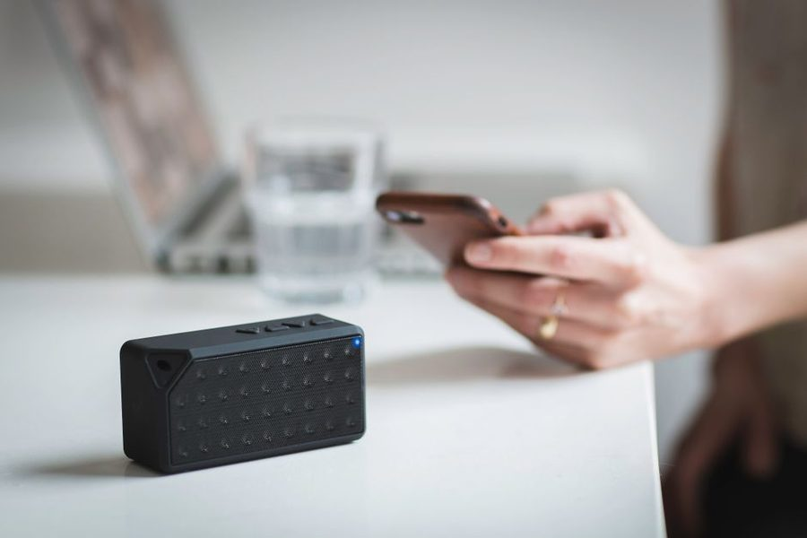

Ligação · folha 04
Registo de 15 de Abril · leitura de 5 minutos
A queixa de imagem dessincronizada raramente é do ecrã: é o atraso do Bluetooth, e depende do codec que os dois lados negociaram.

| Parâmetro | Valor | Nota |
|---|---|---|
| Atraso típico | 150 – 300 ms | áudio por rádio |
| Perceptível em | vídeo e jogos | não em música |
| Alcance nominal | ≈10 m | com linha de vista |
| Solução de atraso | cabo auxiliar | quando existe |
Ao ligar, telemóvel e coluna negoceiam um codec comum. O básico está em todos os aparelhos e é suficiente para música de fundo. Codecs mais recentes transportam mais informação ou reduzem o atraso, mas só funcionam se ambos os lados os suportarem.
Para música, um atraso de duas ou três décimas de segundo é irrelevante — ninguém repara. Para ver vídeo, é exactamente o que faz a boca andar à frente da voz. Muitas aplicações de vídeo compensam automaticamente; jogos, quase nunca.
Se o vídeo dessincroniza sempre, a via por cabo resolve na hora, quando existe entrada auxiliar. Não é elegante, mas é o único caminho garantido para atraso praticamente nulo.
Os dez metros anunciados assumem linha de vista. Uma parede de betão, um corpo humano ou um micro-ondas em funcionamento reduzem o alcance de forma perceptível, porque partilham a mesma banda de rádio.
Falhas curtas e repetidas costumam ser interferência, não avaria. Mudar o telemóvel de bolso ou afastar do router já muda o comportamento — e é o primeiro teste a fazer antes de culpar o aparelho.
Multiponto permite ficar ligado a dois aparelhos ao mesmo tempo, por exemplo computador e telemóvel. É prático e às vezes traz confusão: o áudio salta para o aparelho que fizer som primeiro.
Quando a ligação fica instável sem razão, apagar o emparelhamento dos dois lados e refazer resolve a maioria dos casos. A lista de emparelhamentos antiga é uma fonte de problemas subestimada.
Os valores acima são medições nossas em sala doméstica e servem de ordem de grandeza. Revemos a folha sempre que uma medição repetida contraria o texto.